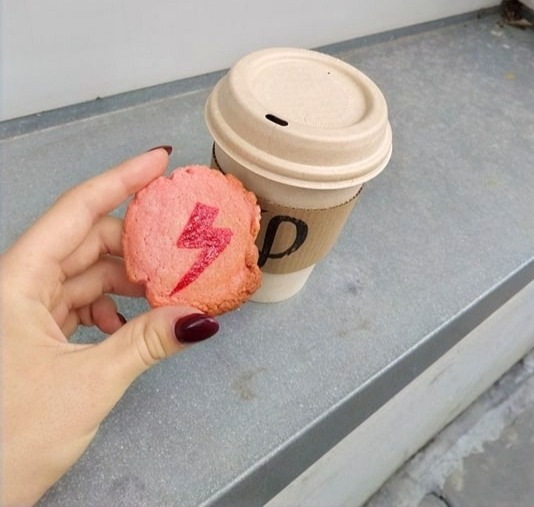

Przyszła i jest. Moja ulubiona, kulturowo szkalowana,
pora roku. Jedyne czego nie można jej odmówić to to,
że prezentuje przed nami wszystkie odcienie szarości.
Nie chcę iść na protest, i co?
wiem, protesty są już od jakiegoś czasu, temat
jest ważki i uniwersalny a rebelia nie
wydaje się chylić ku końcowi
